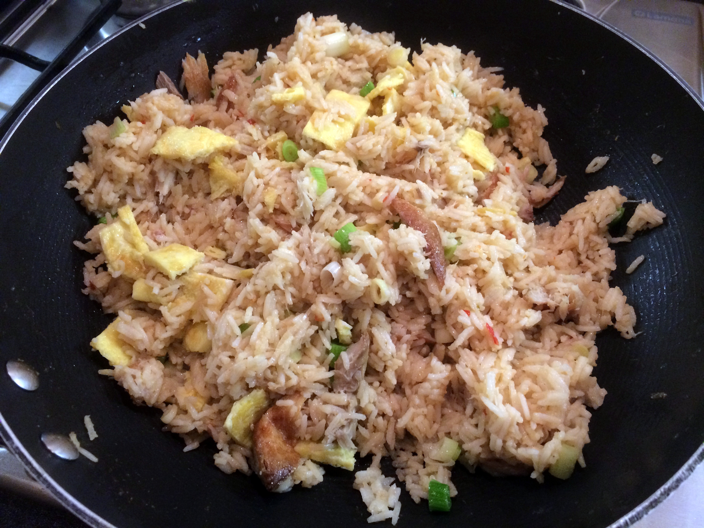

Indonesian Fried Rice with Mackarel recipe

Perfect Combination to cook your leftover rice!
On the table in just 20 minutes and cheap to make too, this one-pan supper will satisfy everyone
Ingredients
- 1 tbsp olive oil
- 2 eggs, lightly beaten
- 1 tbsp red curry paste
- pinch caster sugar
- 800g cooked basmati rice (about 250g-300g uncooked)
- small bunch spring onions, sliced
- 140g frozen peas
- 2 tbsp soy sauce, plus extra to serve
- 4 smoked mackerel fillets, flaked
- 1/2 cucumber, cut into half moons
Steps
- Heat the oil in a large frying pan or wok. Tip in the eggs and swirl to coat the base of the pan. Cook for 1 min, then flip and cook the other side until set. Remove and roughly chop into ribbons.
- Add the curry paste and sugar and fry for 1 min. Tip in the rice and stir to coat in the paste, then add the spring onions and peas. Stir-fry for 2-3 mins until everything is really hot. Add the soy sauce, then gently toss through the omelette ribbons and mackerel.
- Divide between 4 bowls and garnish with the cucumber. Serve with extra soy sauce, if you like.
Back to home